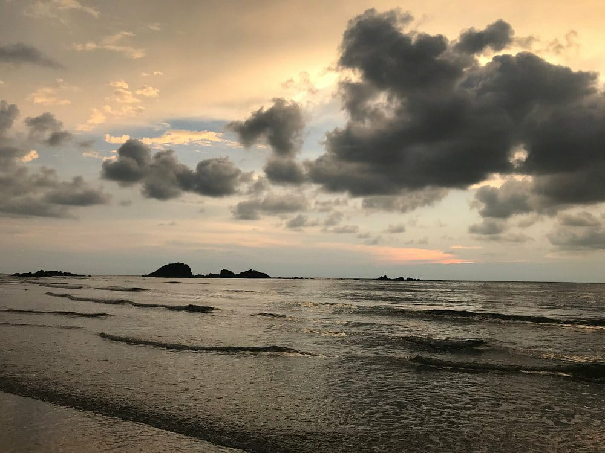

1 / 3

Kannur
2 / 3

3 / 3

Kannur District is one of the 14 districts along the west coast in the state of Kerala, India. The town of Kannur is the district headquarters and gives the district its name. The old name, Cannanore is the anglicised form of the Malayalam name "Kannur". Kannur district is bounded by Kasaragod District to the north, Kozhikode district to the south and Wayanad District to the southeast. To the east the district is bounded by the Western Ghats, which forms the border with the state of Karnataka (Kodagu district). The Arabian Sea lies to the west. Paithalmala is the highest point in the Kannur District (1,372m). Enclosed within the southern part of the district is the Mahé district of the Union Territory of Puducherry. The district was established in 1957. Kannur is the sixth-most urbanized district in Kerala, with more than 50% of its residents living in urban areas. Kannur has an urban population of 1,212,898, which is the second largest in Kerala after Ernakulam district.
According to the 2011 census Kannur district has a population of 2,525,637, This gives it a ranking of 170th in India (out of a total of 640). The district has a population density of 852 inhabitants per square kilometre (2,210/sq mi). Its population growth rate over the decade 2001-2011 was 4.84%. Kannur has a sex ratio of 1133 females for every 1000 males, the highest among any district in India, and a literacy rate of 95.41%. The District has a population of 2,412,365 (2001 census). This was the most urbanised district in Kerala in 2001, but was pushed to 4th place after Ernakulam, Thrissur and Kozhikode in 2011. About 50.35% of the population reside in the urban agglomerations. The total urban population of Kannur district is 1,212,898. This is the second largest urban population in Kerala after Ernakulam and is more than the population of a metro city.
The high urban population is due to the 45 towns in the district which was the highest in Kerala as per 2001 census. 2011 census has Thrissur with 135 towns with Kannur having 67.[9] Kannur district has seven statutory towns: Kannur, Kannur Cantonment, Thalassery, Payyannur, Thaliparamba, Kuthuparamba and Mattannur. In addition to this there are 60 including Ancharakandy, Azhikode North, Azhikode South, Chala, Chelora, Cherukunnu, Cheruthazham, Chirakkal, Chockli, Dharmadom, Elayavoor, Eranholi, Iriveri, Kadachira, Kadirur, Kalliasseri, Kanhirode, Kannadiparamba, Kannapuram, Kottayam-Malabar, Mayyil,Mavilayi, Munderi, Muzhappilangad, Narath, New Mahe, Paduvilayi, Pallikkunnu, Panniyannur, Panoor, Pappinisseri, Pathiriyad, Pattiom, Iritty, Peralasseri, Peringathur, Pinarayi, Puzhathi, Thottada, Valapattanam, Varam.
Kannur was an important trading center in the 12th century with active business connections with Persia and Arabia. It served as the British military headquarters on India's west coast until 1887. In conjunction with her sister city, Tellicherry, it was the third largest city on the western coast of British India in the 18th century after Bombay and Karachi. St. Angelo Fort was built in 1505 by Dom Francisco de Almeida, the first Portuguese Viceroy of India.The Dutch captured the fort from the Portuguese in 1663. They modernised the fort and built the bastions Hollandia, Zeelandia and Frieslandia that are the major features of the present structure. The original Portuguese fort was pulled down later. A painting of this fort and the fishing ferry behind it can be seen in the Rijksmuseum Amsterdam. The Dutch sold the fort to king Ali Raja of Arakkal in 1772. The British conquered it in 1790 and used it as one of their major military stations on the Malabar Coast. During the 17th century, Kannur was the capital city of the only Muslim Sultanate in the malabar region, known as Arakkal. During the British Raj, Kannur was part of the Madras province in the North Malabar District.
Kannur is most renowned for the Theyyam performances in its temples. This magnificent art form plays an integral part in the culture of this Northern Kerala district. Formerly known as Cannanore, Marco Polo christened it a ‘Great Emporium Of Spice Trade’. Kannur has, since time immemorial, been hailed as an influential sea port. Legend has it that it had interactions and trade relations with the rest of the world since the time of King Solomon to the Greeks, Arabs and Romans. It has a plethora of forts, temples, beaches and wildlife sanctuaries that regularly attract visitors. Major festivals and events are held throughout the year and this is among the best places in Kerala to spend your vacation in.